unique(obesity$Gender) # produce: [1] Female Male[1] Female Male
Levels: Male FemaleConocer los valores de la variable género
unique(obesity$Gender) # produce: [1] Female Male[1] Female Male
Levels: Male FemaleConocer el tipo de la variable género
class(obesity$Gender) # produce: [1] "factor"[1] "factor"Gráfico de barras de la varaible de género
ggplot(obesity, aes(x = Gender)) +
geom_bar()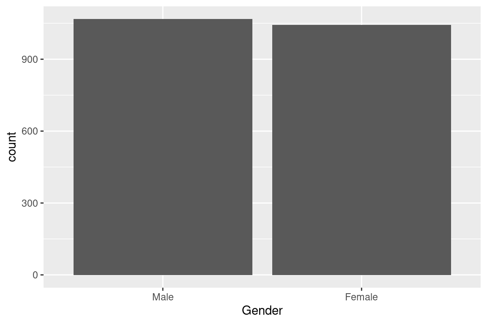
Conocer los valores de la variable historia familiar de exceso de peso
unique(obesity$tiene_familiares_obesos) # produce: [1] si no[1] si no
Levels: si noConocer el tipo de la varaible historia familiar de obesidad
class(obesity$tiene_familiares_obesos) # produce: [1] "factor"[1] "factor"Gráfico de barras que relaciona el género con la historia familiar de exceso de peso
ggplot(obesity, aes(x = Gender, fill = tiene_familiares_obesos)) +
geom_bar(position = "fill")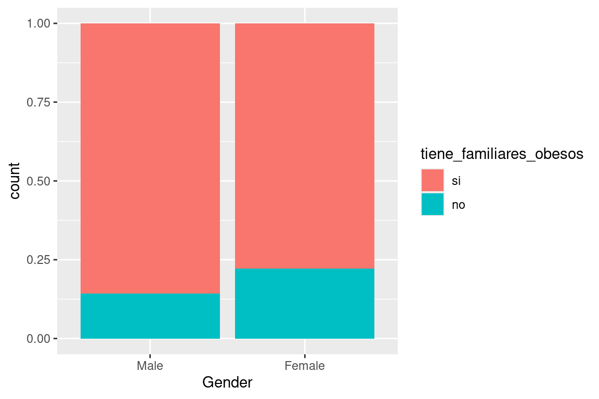
Agrupar por historia familiar de exceso de peso y género y resumir por índice de masa corporal
obesity_historia_familiar <- obesity |>
group_by(tiene_familiares_obesos, Gender) |>
summarise(
med_imc = median(imc, na.rm = TRUE),
.groups = "keep"
)
knitr::kable(obesity_historia_familiar) # produce:| tiene_familiares_obesos | Gender | med_imc |
|---|---|---|
| si | Male | 31.24753 |
| si | Female | 31.83623 |
| no | Male | 24.41928 |
| no | Female | 18.16837 |
Diagrama de caja que relaciona el género con la mediana del índice de masa corporal. Facetada por historia familiar de obesidad
ggplot(obesity_historia_familiar, aes(x = Gender,
y = med_imc)) +
geom_boxplot() +
facet_wrap(~tiene_familiares_obesos)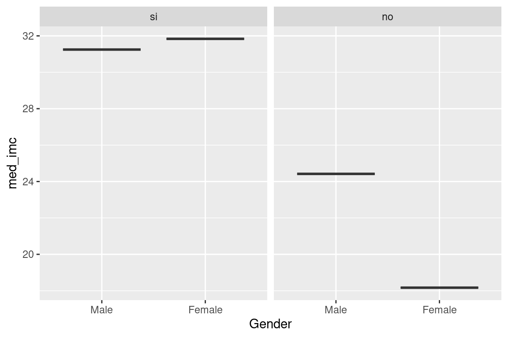
Conocer los valores de la variable consumo de comida muy calórica
unique(obesity$come_comida_muy_calorica) # produce: [1] no si[1] no si
Levels: si noConocer el tipo de la variable consumo de comida muy calórica
class(obesity$come_comida_muy_calorica) # produce: "factor"[1] "factor"Gráfico de barras que relaciona el Género con el consumo de comida calórica y facetada por tipo de obesidad
ggplot(obesity, aes( x = Gender, fill = come_comida_muy_calorica)) +
geom_bar(position = "fill") +
facet_wrap(~tipo_obesidad)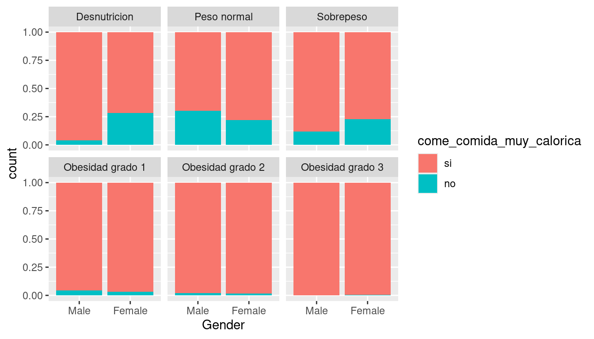
Agrupar por género y consumo de comida muy calórica
obesity_calorica <- obesity |>
group_by(Gender, come_comida_muy_calorica) |>
summarise(
med_imc = median(imc, na.rm = TRUE),
.groups = "keep"
)
knitr::kable(obesity_calorica) # produce:| Gender | come_comida_muy_calorica | med_imc |
|---|---|---|
| Male | si | 29.56638 |
| Male | no | 25.60694 |
| Female | si | 30.90495 |
| Female | no | 22.83737 |
Diagrama de caja que relaciona el género con el índice de masa corporal y coloreado por consumo de comida calórica
ggplot(obesity_calorica, aes(x = Gender, y = med_imc)) +
geom_boxplot(aes(color = come_comida_muy_calorica))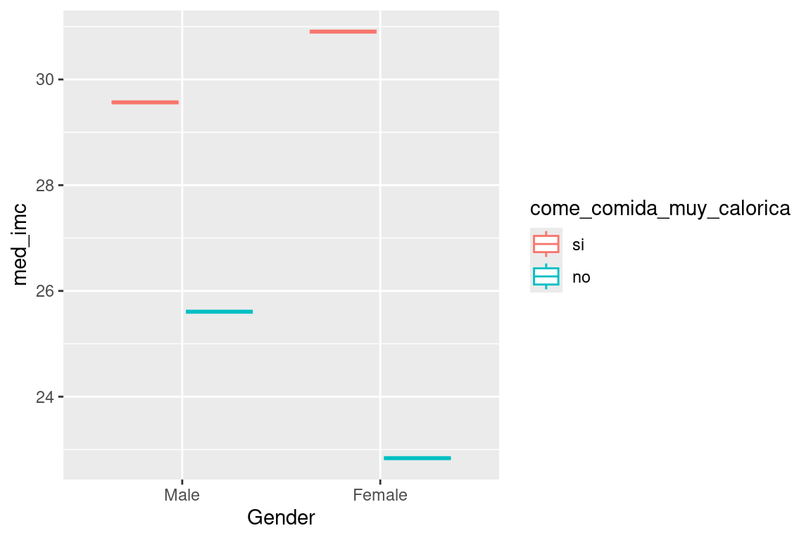
Conocer los valores de la variable consumo de vegetales
unique(obesity$come_vegetales)[1:20] # produce: [1] 2.000000 3.000000 1.000000 2.450218 2.880161 2.008760 2.596579 2.591439
[9] 2.392665 1.123939 2.027574 2.658112 2.886260 2.714447 2.750715 1.492500
[17] 2.205439 2.059138 2.310423 2.823179Conocer el tipo de la variable consumo de vegetales
class(obesity$come_vegetales) # produce: "numeric"[1] "numeric"Gráfico de caja que relaciona el género con el consumo de vegetales facetado por tipo de obesidad
ggplot(obesity, aes(x = Gender, y = come_vegetales)) +
geom_boxplot() +
facet_wrap(~tipo_obesidad)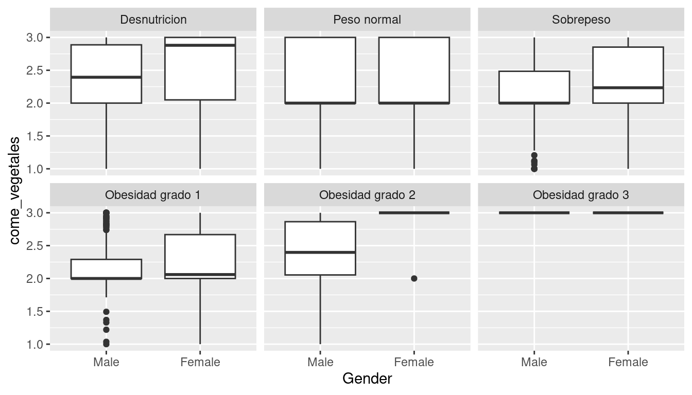
Agrupar por género y tipo de obesidad y resumir por índice de masa corporal y consumo de vegetales
obesity_vegetales <- obesity |>
group_by(tipo_obesidad, Gender) |>
summarise(
med_imc = median(imc, na.rm = TRUE),
med_vegetales = median(come_vegetales, na.rm = TRUE),
.groups = "keep"
)
knitr::kable(obesity_vegetales) # produce:| tipo_obesidad | Gender | med_imc | med_vegetales |
|---|---|---|---|
| Desnutricion | Male | 17.63010 | 2.393947 |
| Desnutricion | Female | 17.48282 | 2.880161 |
| Peso normal | Male | 22.49135 | 2.000000 |
| Peso normal | Female | 22.03857 | 2.000000 |
| Sobrepeso | Male | 27.20133 | 2.000000 |
| Sobrepeso | Female | 26.71661 | 2.234066 |
| Obesidad grado 1 | Male | 32.70044 | 2.000000 |
| Obesidad grado 1 | Female | 31.89249 | 2.059804 |
| Obesidad grado 2 | Male | 36.47965 | 2.397284 |
| Obesidad grado 2 | Female | 39.02219 | 3.000000 |
| Obesidad grado 3 | Male | 49.47239 | 3.000000 |
| Obesidad grado 3 | Female | 42.75894 | 3.000000 |
Diagrama de caja que relaciona el tipo de obesidad con el consumo de vegetales y facetado por género
ggplot(obesity_vegetales, aes(x = tipo_obesidad, y = med_vegetales)) +
geom_boxplot() +
facet_wrap(~Gender)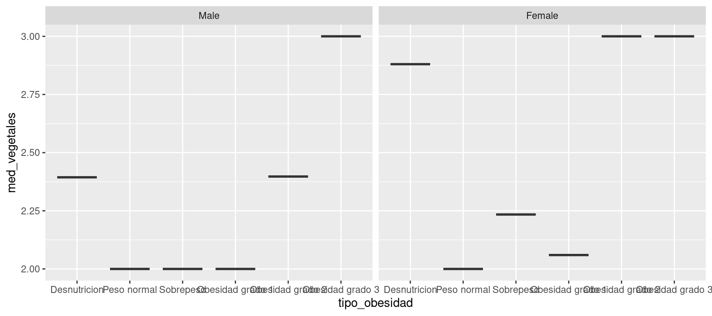
Conocer los valores de la variable de número de comidas principales
unique(obesity$comidas_principales)[1:20] # produce: [1] 3.000000 1.000000 4.000000 3.289260 3.995147 1.726260 2.581015 1.600812
[9] 1.737620 1.105480 2.084600 1.894384 2.857787 3.765526 3.285167 3.691226
[17] 3.156153 1.079760 3.559841 3.891994Conocer el tipo de la variable de número de comidas principales
class(obesity$comidas_principales) # produce: "numeric"[1] "numeric"Diagrama de caja que relaciona el género con el número de comidas principales y facetado por tipo de obesidad
ggplot(obesity, aes(x = Gender, y = comidas_principales)) +
geom_boxplot() +
facet_wrap(~tipo_obesidad)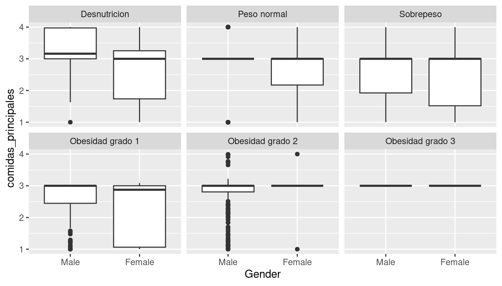
Agrupar la tabla de obesidad por género y tipo de obesidad y resumir por número de comidas principales
obesity |>
group_by(Gender, tipo_obesidad) |>
summarise(
med_comidas_principales = median(comidas_principales,
na.rm = TRUE),
.groups = "keep"
) |>
knitr::kable()| Gender | tipo_obesidad | med_comidas_principales |
|---|---|---|
| Male | Desnutricion | 3.161301 |
| Male | Peso normal | 3.000000 |
| Male | Sobrepeso | 3.000000 |
| Male | Obesidad grado 1 | 3.000000 |
| Male | Obesidad grado 2 | 3.000000 |
| Male | Obesidad grado 3 | 3.000000 |
| Female | Desnutricion | 3.000000 |
| Female | Peso normal | 3.000000 |
| Female | Sobrepeso | 3.000000 |
| Female | Obesidad grado 1 | 2.875101 |
| Female | Obesidad grado 2 | 3.000000 |
| Female | Obesidad grado 3 | 3.000000 |
Conocer los valores de la variable de consumo de refrigerios
unique(obesity$come_refrigerios) # produce:[1] ocasional frecuente siempre nunca
Levels: ocasional frecuente nunca siempreConocer el tipo de la variable consumo de refrigerios
class(obesity$come_refrigerios) # produce: "factor"[1] "factor"Gráfico de barras que relaciona el género con el consumo de refrigerios y facetado por tipo de obeidad
ggplot(obesity, aes(x = Gender, fill = come_refrigerios)) +
geom_bar(position = "fill") +
facet_wrap(~tipo_obesidad)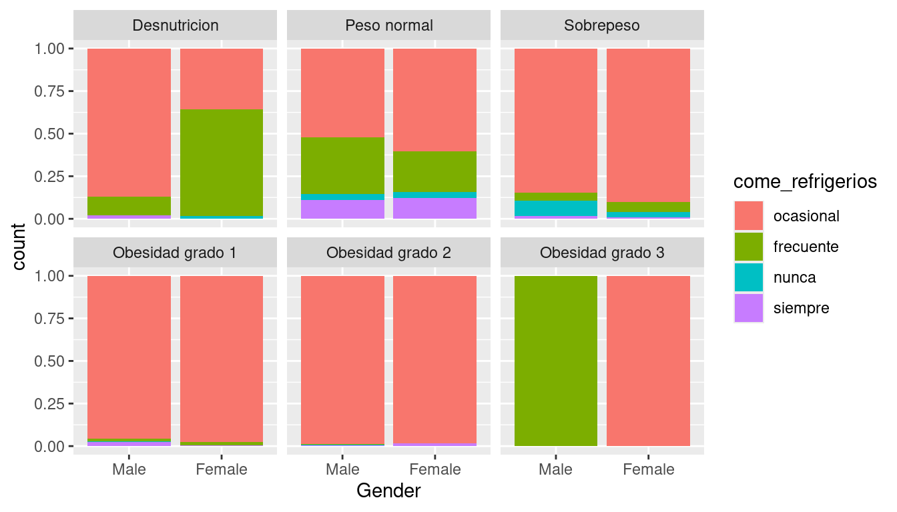
Agrupar la tabla obesidad por género y consumo de calorías, y resumir por índice de masa corporal
obesity_refrigerios <- obesity |>
group_by(come_refrigerios, Gender) |>
summarise(
med_imc = median(imc, na.rm = TRUE),
.groups = "keep"
)
knitr::kable(obesity_refrigerios) # produce:| come_refrigerios | Gender | med_imc |
|---|---|---|
| ocasional | Male | 31.04769 |
| ocasional | Female | 31.38296 |
| frecuente | Male | 22.97578 |
| frecuente | Female | 17.97492 |
| nunca | Male | 26.67276 |
| nunca | Female | 24.50895 |
| siempre | Male | 24.27489 |
| siempre | Female | 22.58271 |
Diagrama de caja que relaciona el consumo de refrigerios con el índice de masa corporal y facetada por género
ggplot(obesity_refrigerios, aes(x = come_refrigerios, y = med_imc)) +
geom_boxplot() +
facet_wrap(~Gender)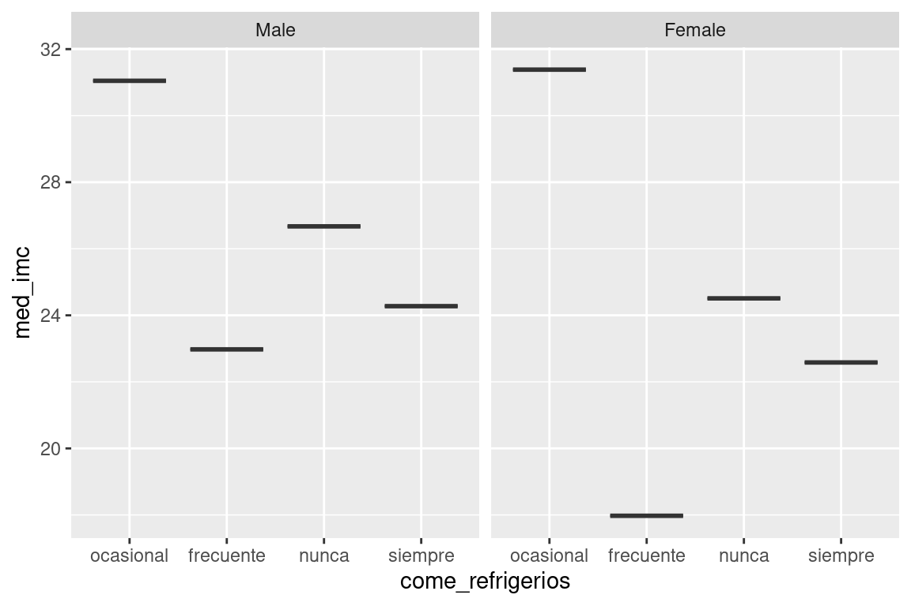
Conocer los valores de la varible de hábito de fumar
unique(obesity$fuma) # produce: [1] no si[1] no si
Levels: si noConocer el tipo de la variable hábito de fumar
class(obesity$fuma) # produce: [1] "factor"[1] "factor"Gráfico de barras que relaciona género con el hábito de fumar y facetado por tipo de obesidad
ggplot(obesity, aes(x = Gender, fill = fuma)) +
geom_bar(position = "fill") +
facet_wrap(~tipo_obesidad)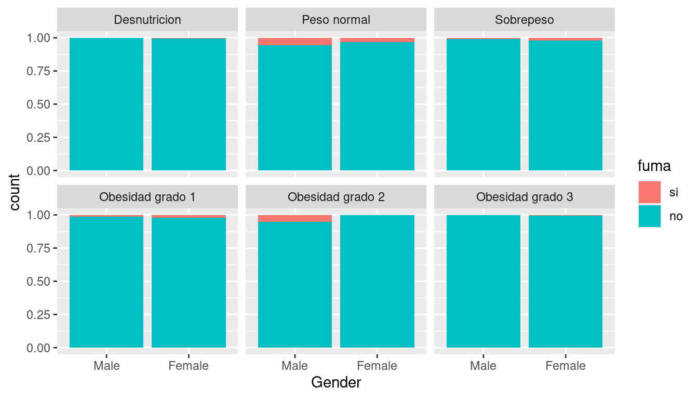
Agrupar la tabla obesidad por hábito de fumar y género y resumir por índice de masa corporal.
obesity |>
group_by(fuma, Gender) |>
summarise(
med_imc = median(imc, na.rm = TRUE),
avg_imc = mean(imc, na.rm = TRUE),
.groups = "keep"
) |> knitr::kable()| fuma | Gender | med_imc | avg_imc |
|---|---|---|---|
| si | Male | 35.26476 | 31.13518 |
| si | Female | 26.89232 | 26.79391 |
| no | Male | 28.78859 | 29.22861 |
| no | Female | 28.51195 | 30.17868 |
Conocer el tipo de la variable consumo de agua
class(obesity$agua_diaria) # produce: "numeric"[1] "numeric"Conocer los valores de la varaible consumo de agua
unique(obesity$agua_diaria)[1:20] # produce: [1] 2.000000 3.000000 1.000000 1.152736 1.115967 2.704507 2.184707 2.406541
[9] 2.984323 2.444125 2.654702 2.825629 2.847264 2.884033 2.147746 2.815293
[17] 2.593459 1.031354 2.651258 1.792022Diagrama de caja que relaciona el género con el consumo de agua y facetado por tipo de obesidad
ggplot(obesity, aes(x = Gender, y = agua_diaria)) +
geom_boxplot() +
facet_wrap(~tipo_obesidad)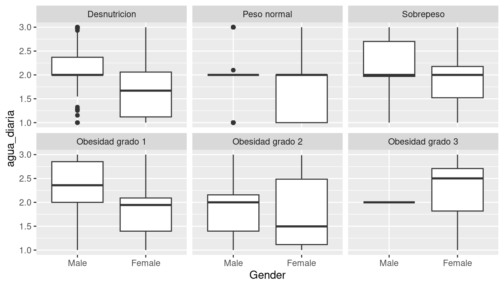
Agrupar la tabla de obesidad por tipo de obesidad y género y resumida por consumo de agua e índice de masa corporal
obesity_agua <- obesity |>
group_by(tipo_obesidad, Gender) |>
summarise(
med_agua = median(agua_diaria, na.rm = TRUE),
avg_agua = mean(agua_diaria, na.tm = TRUE),
med_imc = median(imc, na.rm = TRUE),
.groups = "keep"
)
knitr::kable(obesity_agua) # produce| tipo_obesidad | Gender | med_agua | avg_agua | med_imc |
|---|---|---|---|---|
| Desnutricion | Male | 2.000000 | 2.123461 | 17.63010 |
| Desnutricion | Female | 1.670620 | 1.723055 | 17.48282 |
| Peso normal | Male | 2.000000 | 1.925343 | 22.49135 |
| Peso normal | Female | 2.000000 | 1.766475 | 22.03857 |
| Sobrepeso | Male | 2.000000 | 2.151893 | 27.20133 |
| Sobrepeso | Female | 2.000000 | 1.915390 | 26.71661 |
| Obesidad grado 1 | Male | 2.358109 | 2.310869 | 32.70044 |
| Obesidad grado 1 | Female | 1.944579 | 1.854402 | 31.89249 |
| Obesidad grado 2 | Male | 2.000000 | 1.859811 | 36.47965 |
| Obesidad grado 2 | Female | 1.495830 | 1.750684 | 39.02219 |
| Obesidad grado 3 | Male | 2.000000 | 2.000000 | 49.47239 |
| Obesidad grado 3 | Female | 2.501638 | 2.296859 | 42.75894 |
Diagrama de dispersión que relaciona el consumo de agua con el índice de masa corporal, coloreado por género y facetado por tipo de obesidad
ggplot(obesity_agua, aes(x = med_agua, y = med_imc)) +
geom_point(aes(color = Gender)) +
facet_wrap(~tipo_obesidad)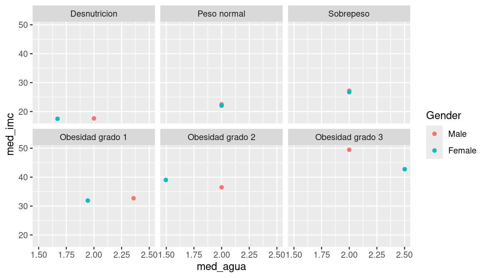
Conocer el tipo de la variable consumo de bebidas calóricas
class(obesity$toma_bebidas_calóricas) # produce: "factor"[1] "factor"Conocer los valores de la variable consumo de bebidas calóricas
unique(obesity$toma_bebidas_calóricas) # produce: [1] no si[1] no si
Levels: no siGráfico de barras que relaciona el género con el consumo de bebidas calóricas, facetado por tipo de obesidad
ggplot(obesity, aes(x = Gender, fill = toma_bebidas_calóricas)) +
geom_bar(position = "fill") +
facet_wrap(~tipo_obesidad)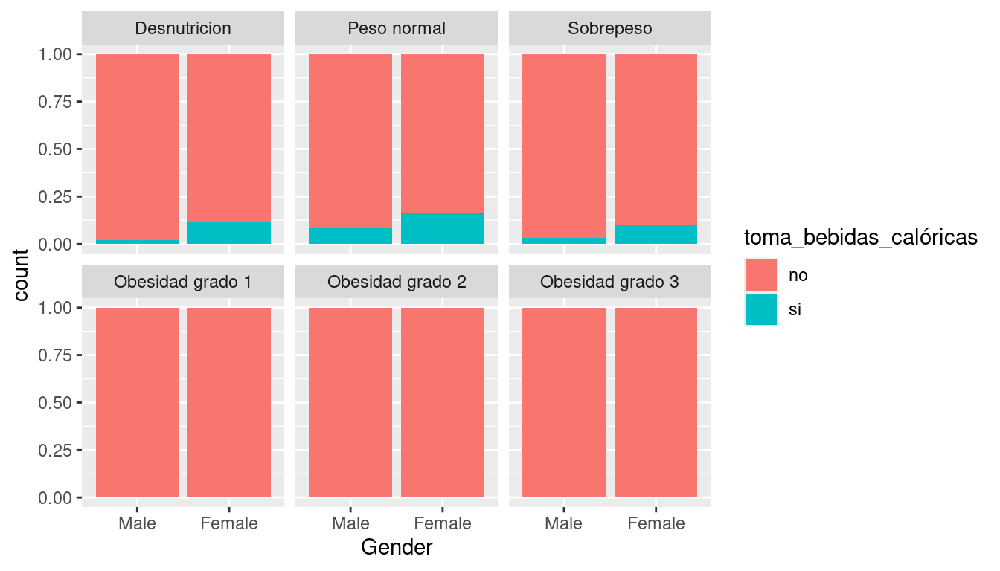
Agrupar la tabla obesidad por género y consumo de bebidas calóricas y resumir por índice de masa corporal
obesity |>
group_by(Gender, toma_bebidas_calóricas) |>
summarize(
med_imc = median(imc, na.rm = TRUE),
avg_imc = mean(imc, na.rm = TRUE),
.groups = "keep"
) |> knitr::kable() # produce: | Gender | toma_bebidas_calóricas | med_imc | avg_imc |
|---|---|---|---|
| Male | no | 29.00051 | 29.39937 |
| Male | si | 24.81365 | 24.51153 |
| Female | no | 29.44086 | 30.68948 |
| Female | si | 23.58139 | 22.35330 |
Conocer el tipo de la variable actividad física
class(obesity$actividad_fisica) # produce: "numeric"[1] "numeric"Conocer los valores de la variable actividad física
unique(obesity$actividad_fisica)[1:20] # produce: [1] 0.000000 3.000000 2.000000 1.000000 0.319156 1.541072 1.978631 0.100320
[9] 1.586525 1.399183 1.680844 2.206738 1.318170 0.902095 0.600817 0.119643
[17] 0.345684 1.679935 2.539762 0.196152Diagrama de caja que relaciona el género con la actividad física y facetada por tipo de obesidad
ggplot(obesity, aes(x = Gender, y = actividad_fisica)) +
geom_boxplot() +
facet_wrap(~tipo_obesidad)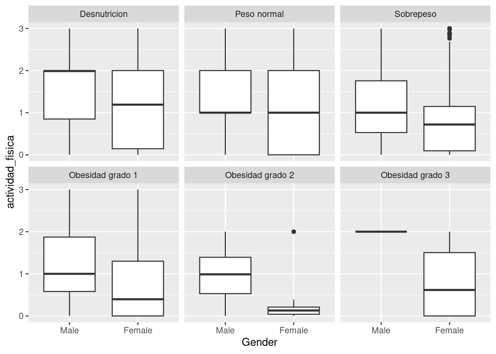
Agrupar la tabla obesidad por tipo de obesidad y género y resumir por índice de masa corporal y actividad física
obesity_fisica <- obesity |>
group_by(tipo_obesidad, Gender) |>
summarise(
med_imc = median(imc, na.rm = TRUE),
med_fisica = median(actividad_fisica, na.rm = TRUE),
.groups = "keep"
)
knitr::kable(obesity_fisica) # produce:| tipo_obesidad | Gender | med_imc | med_fisica |
|---|---|---|---|
| Desnutricion | Male | 17.63010 | 1.9881705 |
| Desnutricion | Female | 17.48282 | 1.1904650 |
| Peso normal | Male | 22.49135 | 1.0000000 |
| Peso normal | Female | 22.03857 | 1.0000000 |
| Sobrepeso | Male | 27.20133 | 1.0000000 |
| Sobrepeso | Female | 26.71661 | 0.7192815 |
| Obesidad grado 1 | Male | 32.70044 | 1.0000000 |
| Obesidad grado 1 | Female | 31.89249 | 0.3961655 |
| Obesidad grado 2 | Male | 36.47965 | 0.9875210 |
| Obesidad grado 2 | Female | 39.02219 | 0.1291780 |
| Obesidad grado 3 | Male | 49.47239 | 2.0000000 |
| Obesidad grado 3 | Female | 42.75894 | 0.6165030 |
Diagrama de dispersión que relaciona el índice de masa corporal con la actividad física, coloreado por género y facetado por tipo de obesidad
ggplot(obesity_fisica, aes(x = med_imc, y = med_fisica)) +
geom_point(aes(color = Gender)) +
facet_wrap(~tipo_obesidad)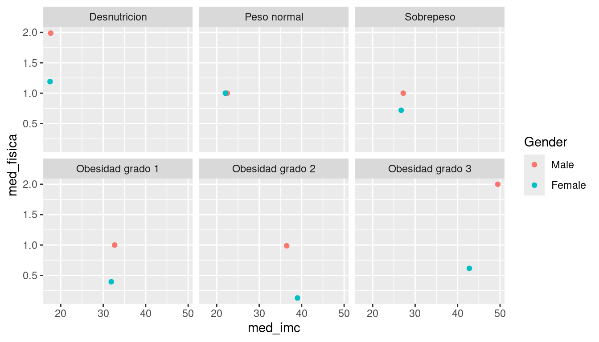
Conocer el tipo de la variable uso de tecnología
class(obesity$uso_tecnologia) # produce: "numeric"[1] "numeric"Conocer los valores de la variable de tiempo de uso de tecnología
unique(obesity$uso_tecnologia)[1:20] # produce: [1] 1.000000 0.000000 2.000000 0.294990 0.838957 0.479221 0.625350 0.265790
[9] 0.555468 0.928972 1.340107 0.589980 1.374650 1.283673 0.062488 0.997400
[17] 0.738269 0.860497 0.478676 0.555967Diagrama de caja que relaciona el género con el uso de tecnología y facetado por tipo de obesidad
ggplot(obesity, aes(x = Gender, y = uso_tecnologia)) +
geom_boxplot() +
facet_wrap(~tipo_obesidad)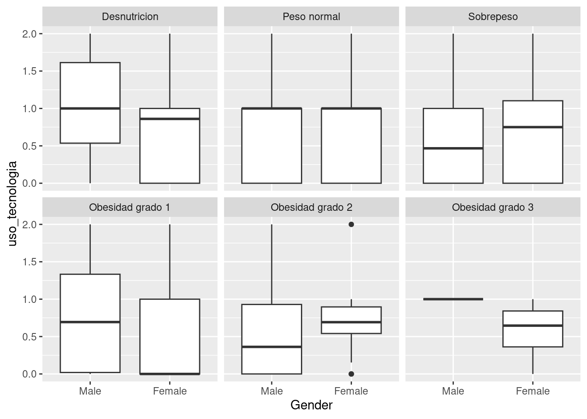
Agrupar la tabla de obesidad por tipo de obesidad y género y resumir por uso de tecnología
obesity_tecnologia <- obesity |>
group_by(tipo_obesidad, Gender) |>
summarise(
med_tecnologia = median(uso_tecnologia, na.rm = TRUE),
med_imc = median(imc, na.rm = TRUE),
.groups = "keep"
)
knitr::kable(obesity_tecnologia) # produce:| tipo_obesidad | Gender | med_tecnologia | med_imc |
|---|---|---|---|
| Desnutricion | Male | 1.0000000 | 17.63010 |
| Desnutricion | Female | 0.8604970 | 17.48282 |
| Peso normal | Male | 1.0000000 | 22.49135 |
| Peso normal | Female | 1.0000000 | 22.03857 |
| Sobrepeso | Male | 0.4668785 | 27.20133 |
| Sobrepeso | Female | 0.7502505 | 26.71661 |
| Obesidad grado 1 | Male | 0.6939975 | 32.70044 |
| Obesidad grado 1 | Female | 0.0000000 | 31.89249 |
| Obesidad grado 2 | Male | 0.3621600 | 36.47965 |
| Obesidad grado 2 | Female | 0.6923430 | 39.02219 |
| Obesidad grado 3 | Male | 1.0000000 | 49.47239 |
| Obesidad grado 3 | Female | 0.6462880 | 42.75894 |
Diagrama de dispersión que relaciona el uso de tecnología con el índice de masa corporal coloreado por género y facetado por tipo de obesidad
ggplot(obesity_tecnologia, aes(x = med_tecnologia, y = med_imc)) +
geom_point(aes(color = Gender)) +
facet_wrap(~tipo_obesidad)
Conocer el tipo de la variable de consumo de alcohol
class(obesity$consume_alcohol) # produce: "factor"[1] "factor"Conocer los valores de la variable consumo de alcohol
unique(obesity$consume_alcohol) # produce:[1] nunca ocasional frecuente siempre
Levels: nunca ocasional frecuente siempre#[1] nunca ocasional frecuente siempre Gráfico de barras que relaciona el consumo de alcohol con el género y facetado por tipo de obesidad
ggplot(obesity, aes(x = Gender, fill = consume_alcohol)) +
geom_bar(position = "fill") +
facet_wrap(~tipo_obesidad)
Agrupar la tabla obesidad por consumo de alcohol y género y resumir por índice de masa corporal
obesity_alcohol <- obesity |>
group_by(consume_alcohol, Gender) |>
summarise(
med_imc = median(imc, na.rm = TRUE),
.groups = "keep"
)
knitr::kable(obesity_alcohol) # produce:| consume_alcohol | Gender | med_imc |
|---|---|---|
| nunca | Male | 29.38476 |
| nunca | Female | 26.45388 |
| ocasional | Male | 28.71356 |
| ocasional | Female | 32.10046 |
| frecuente | Male | 27.46836 |
| frecuente | Female | 25.60184 |
| siempre | Male | 22.49135 |
Diagrama de caja que relaciona el género con el índice de masa corporal y facetado por consumo de lacohol
ggplot(obesity_alcohol, aes(x = Gender, y = med_imc)) +
geom_boxplot() +
facet_wrap(~consume_alcohol)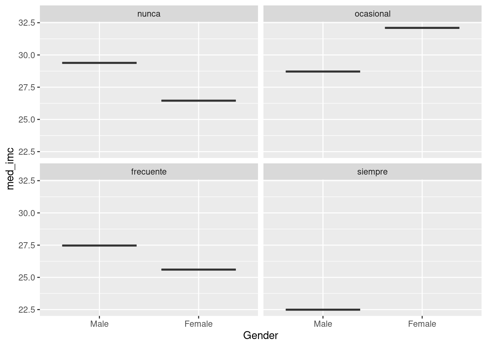
Conocer el tipo de la variable de medio de transporte
class(obesity$medio_transporte) # produce: "factor"[1] "factor"Conocer los valores de la variable medio de transporte
unique(obesity$medio_transporte) # produce: [1] transporte_publico camina auto moto
[5] bicicleta
Levels: transporte_publico auto moto camina bicicleta#[1] transporte_publico camina auto
#[4] moto bicicleta Gráfico de barras que relaciona el género con el medio de transporte y facetado por tipo de obesidad
ggplot(obesity, aes(x = Gender, fill = medio_transporte)) +
geom_bar(position = "fill") +
facet_wrap(~tipo_obesidad)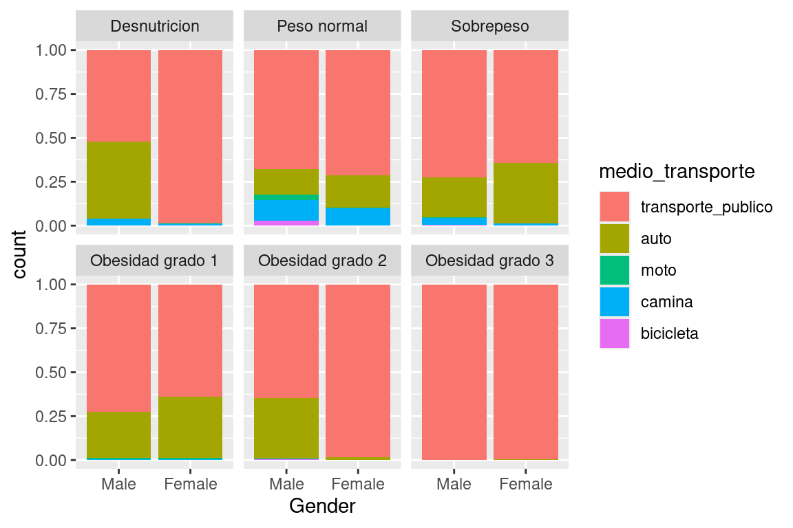
Agrupar la tabla de obesidad por tipo de medio de transporte y género y resumido por índice de masa corporal
obesity_transporte <- obesity |>
group_by(medio_transporte, Gender) |>
summarise(
med_imc = median(imc, na.rm = TRUE),
.groups = "keep"
)
knitr::kable(obesity_transporte) # produce:| medio_transporte | Gender | med_imc |
|---|---|---|
| transporte_publico | Male | 28.71941 |
| transporte_publico | Female | 29.76627 |
| auto | Male | 30.85221 |
| auto | Female | 27.73131 |
| moto | Male | 24.28098 |
| moto | Female | 28.88889 |
| camina | Male | 24.22145 |
| camina | Female | 22.03857 |
| bicicleta | Male | 24.21229 |
Diagrama de caja que relaciona el género con el índice de masa corporal y facetado por tipo de medio de transporte
ggplot(obesity_transporte, aes(x = Gender, y = med_imc)) +
geom_boxplot() +
facet_wrap(~medio_transporte)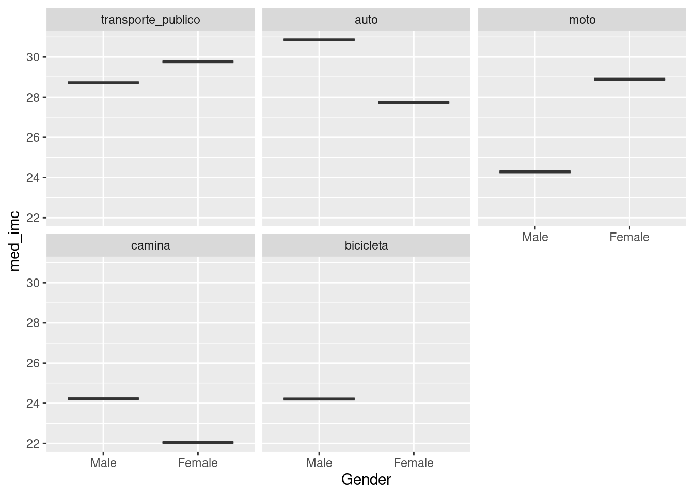